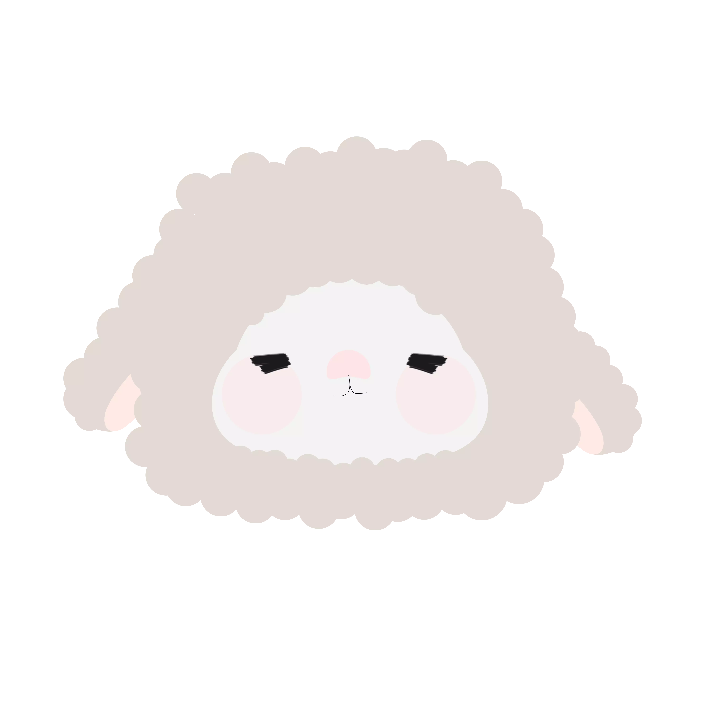

Monday Prieme League — Season 1
Liga foto internal DombaTerbang setiap hari Senin. Foto terbaik akan mendapatkan poin untuk klasemen musim.

Monday Prieme League
Senin cerah, foto cerah, mood cerah. 🌤️
Matchday 1
0% Season
Podium Minggu Terakhir
Monday Prieme League
Voting belum dimulai.
-
Season Standings
| Rank | Member | Matchday | 1st | 2nd | 3rd | Total Vote | Point | Form |
|---|
Season Highlights
Key statistics and top achievements this season.
Hasil Per Minggu
Klik salah satu minggu untuk melihat detail lengkap dan foto pemenangnya.